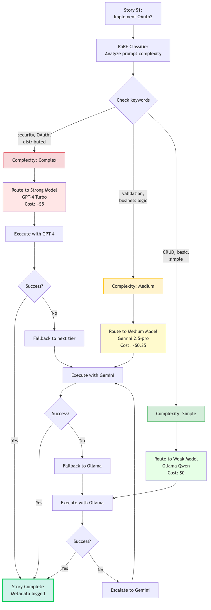

The real cost breakdown from 47 iterations: where money goes, where it doesn't, and how to avoid the expensive traps most teams fall into.
Here's what happened during our first sprint using only GPT-4:
Day 1: "This is amazing! We built three features!"
Day 3: "Wait, why is the bill at $180?"
Day 7: "We need to stop. We've burned through the monthly budget."
Sound familiar?
The problem isn't that GPT-4 is expensive. It's that most teams use expensive models for everything—including tasks that don't need them.
Imagine paying for AWS Lambda pricing on a static HTML page. That's what using GPT-4 for requirements drafts feels like.
Let me show you what two weeks of actual usage looks like.
The Real Numbers (14 Days, 47 Iterations):
Cost breakdown by role:
If I had used GPT-4 for everything: ~$380
Savings: 87.5%
Here's the thing: quality didn't drop. QA validates everything. Tests still pass. Code still works. We just stopped burning money on drafts.
Decision tree for routing tasks to Free, Medium, or High cost tiers
We use three tiers:
Use for: Drafts, brainstorming, iterations, fallback
Models: granite4, qwen2.5-coder, mistral, llama3.3
Cost: $0
Latency: 1-3 seconds per call
Roles:
Use for: Planning, architecture, story generation
Model: Gemini 2.5-pro
Cost: ~$0.20 per feature
Latency: 2-5 seconds per call
Why Gemini for Architect:
Use for: Critical code generation, final QA validation
Models: GPT-4-turbo ($15/1M), Claude 3.5 Sonnet ($15/1M)
Cost: $4-6 per story
Latency: 3-8 seconds per call
Why pay premium:
Problem: Even within a role, not all tasks need the same model.
Example:
RoRF = Routing or Ranking Framework
It's a prompt classifier that analyzes task complexity and routes to the appropriate model.
How RoRF analyzes complexity and routes to weak (cheap) or strong (expensive) models
| Complexity | Stories | Model Used | Avg Cost | Total Cost |
|---|---|---|---|---|
| Simple | 28 | Ollama | $0 | $0 |
| Medium | 12 | Gemini | $0.35 | $4.20 |
| Complex | 7 | GPT-4 | $4.80 | $33.60 |
| Total | 47 | Mixed | $0.81 | $37.80 |
Without RoRF (all GPT-4): $225
Savings: 83%
Let's compare three approaches over 100 features:
BA: 100 calls × $2.50 = $250
Architect: 100 calls × $3.00 = $300
Dev: 100 stories × $5.00 = $500
QA: 100 calls × $1.50 = $150
Total: $1,200BA (Ollama): 100 calls × $0 = $0
Architect (Gemini): 100 calls × $0.20 = $20
Dev (GPT-4): 100 stories × $5.00 = $500
QA (Claude): 100 calls × $1.50 = $150
Total: $670
Savings: 44%BA (Ollama): 100 calls × $0 = $0
Architect (Gemini): 100 calls × $0.20 = $20
Dev (Mixed):
- 60 simple (Ollama): $0
- 25 medium (Gemini): $0.35 × 25 = $8.75
- 15 complex (GPT-4): $5.00 × 15 = $75
QA (Mixed):
- 70 simple (Ollama): $0
- 30 critical (Claude): $1.50 × 30 = $45
Total: $148.75
Savings: 87.6%Monthly cost for a team building 100 features/month:
Step 1: Set up cost tiers
# Free tier (BA, PO)
make set-role role=ba provider=ollama model="granite4"
make set-role role=po provider=ollama model="granite4"
# Medium tier (Architect)
make set-role role=architect provider=vertex_sdk model="gemini-2.5-pro"
# High tier (Dev, QA)
make set-role role=dev provider=codex_cli model="gpt-4-turbo"
make set-role role=qa provider=claude_cli model="claude-3-5-sonnet-latest"Step 2: Enable RoRF (optional)
export MODEL_RECO_ENABLED=1Step 3: Run an iteration
make iteration CONCEPT="Todo app with user authentication"Step 4: Check costs
cat artifacts/iterations/*/summary.json | jq '.total_cost'In Part 4, we'll dive into the fallback system: what happens when Gemini fails, how it scores backup models, and how to configure recovery strategies.
In Part 5, I'll show you how to run each role as an independent service (A2A mode) so different teams can own different parts of the pipeline.